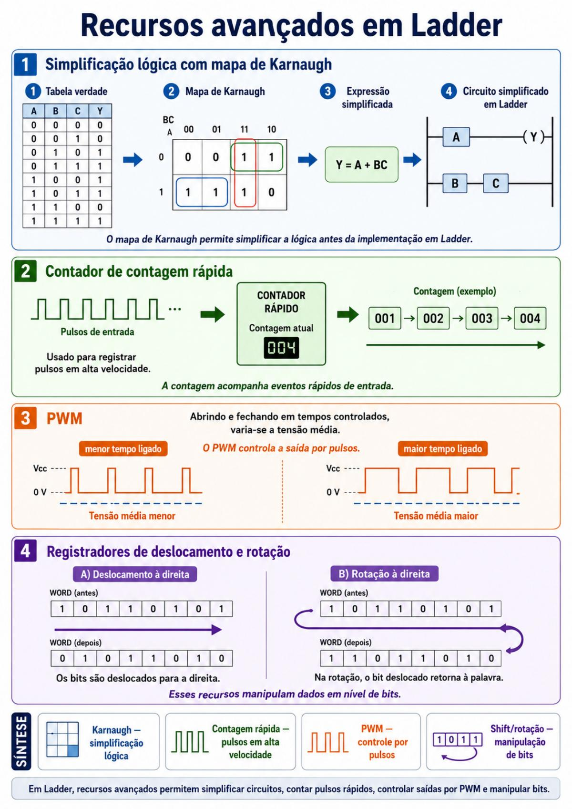
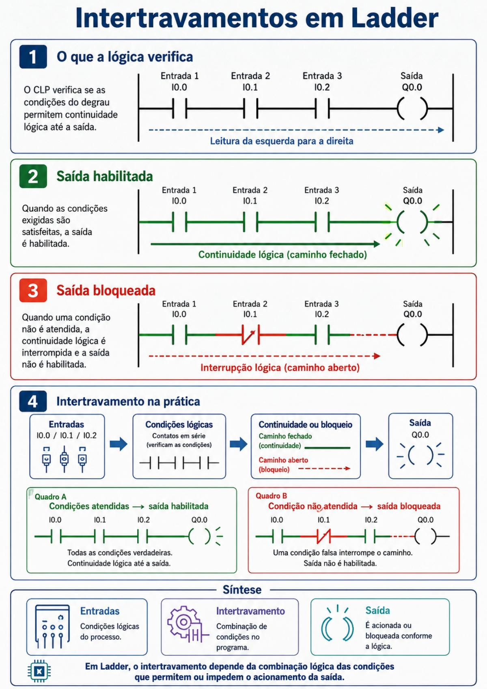
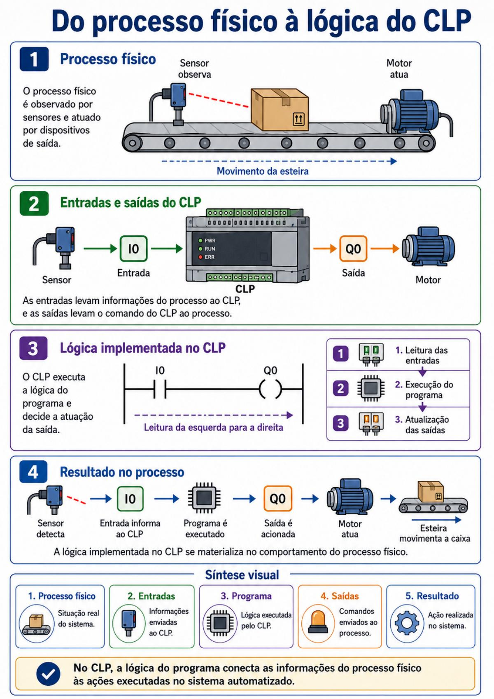

Assessoria técnica para PPCs
Revisão e qualificação de Projetos Pedagógicos de Curso, articulando perfil profissional, competências, objetivos, organização curricular, metodologias e avaliação.
PORTFÓLIO • 2026
Complexidade técnica, aprendizagem clara.
Transformo contextos e conhecimentos complexos em estratégias, currículos e experiências de aprendizagem claras, acessíveis e relevantes — da revisão de PPCs à formação de equipes, ao design de soluções digitais e ao uso intencional de IA.
ATUAÇÃO
Apoio instituições e equipes desde a organização curricular até a produção, implementação e qualificação de experiências de aprendizagem.
Revisão e qualificação de Projetos Pedagógicos de Curso, articulando perfil profissional, competências, objetivos, organização curricular, metodologias e avaliação.
Planejamento e reformulação de cursos, formações, materiais e experiências presenciais, híbridas ou on-line.
Capacitação de docentes e equipes e adaptação de materiais para experiências mais acessíveis, flexíveis e sensíveis à diversidade dos estudantes.
Formações e consultorias para integrar IA de modo crítico, ético e responsável, a partir de objetivos de aprendizagem e necessidades reais.
Mapeamento de fluxos, prototipação e construção de soluções de apoio à gestão educacional com ferramentas do ecossistema Microsoft 365.
Organização progressiva de conhecimentos, atividades e avaliações, considerando pré-requisitos, complexidade e desenvolvimento de competências.
EXPERIÊNCIA INSTITUCIONAL
Os exemplos abaixo apresentam somente materiais e contribuições que podem ser mostrados. Outros projetos permanecem resguardados por direitos autorais, confidencialidade ou proteção de informações institucionais.
TRABALHOS SELECIONADOS
Cada caso apresenta o contexto do trabalho, minha contribuição e as competências demonstradas — sem ampliar autoria além do que efetivamente realizei.
Aplicativo em Power Apps para centralizar, registrar e acompanhar solicitações de correção ou ajuste dos Documentos de Referência dos cursos Firjan SENAI.
Substituir registros descentralizados por um fluxo rastreável, capaz de receber uma solicitação com múltiplas inadequações, acompanhar análise, parecer e status e devolver informações ao solicitante.
Mapeamento do fluxo, configuração das listas, construção de telas e fórmulas, definição das relações entre registros, criação de fluxos de notificação e testes da solução no ecossistema Microsoft 365.
Conjunto de infográficos desenvolvido a partir do conteúdo-base de uma apostila de CLP para compor uma experiência digital no Articulate.
Seleção, organização, síntese e transposição didática do conteúdo técnico para recursos visuais. O conteúdo de referência pertence à apostila do curso; meu trabalho foi transformá-lo em uma estrutura visual mais clara e adequada à experiência digital.

Recursos avançados em Ladder ↗
Intertravamentos e segurança lógica ↗
Do processo físico à lógica do CLP ↗Vídeo educacional desenvolvido para a Caixa Econômica Federal. Minha atuação concentrou-se na concepção instrucional do conteúdo audiovisual.
Elaboração do roteiro e ideação da animação: estrutura narrativa, sequência das informações e proposta de representação visual para apoiar a compreensão. A produção e execução audiovisual foram realizadas pela equipe responsável pelo projeto.
Amostra de projeto real • 42 s
PROJETOS DEMONSTRATIVOS
Estes três trabalhos foram criados especificamente para o portfólio e não reproduzem materiais confidenciais de clientes.
TREINAMENTO TÉCNICO ON-LINE
Microcurso conceitual que organiza conteúdo técnico em uma jornada orientada à observação, decisão e comunicação.
MICROVÍDEO
Microvídeo conceitual que transforma princípios de uso responsável da IA em uma rotina simples: pausar, verificar e decidir.
“Pause, verifique e decida.”
CENÁRIO RAMIFICADO
Cenário de decisão com feedback formativo, progressão visível e foco na transferência da aprendizagem para situações de trabalho.
COMO EU TRABALHO
Público, contexto, riscos, desempenho esperado e evidências de aprendizagem.
Objetivos, sequência, linguagem, interações, avaliação, fluxos e recursos de acessibilidade.
Roteiros, storyboards, objetos digitais, vídeos, materiais, protótipos e configuração de soluções.
Revisão pedagógica e textual, testes de usabilidade, acessibilidade e melhoria contínua.
SOBRE
Atuo na interseção entre educação, tecnologia, linguagem e acessibilidade, desenvolvendo projetos que transformam conhecimentos complexos em experiências de aprendizagem claras, inclusivas e relevantes.
Minha trajetória reúne docência, pesquisa aplicada, estratégia educacional, gestão acadêmica e desenvolvimento de soluções digitais — de cursos on-line, materiais didáticos e videoaulas a recursos interativos, formações, automação de processos e projetos com inteligência artificial.
Em cada trabalho, investigo contextos, organizo conhecimentos e conecto pessoas, objetivos e tecnologias para favorecer compreensão, tomada de decisão e ação.
CONTATO